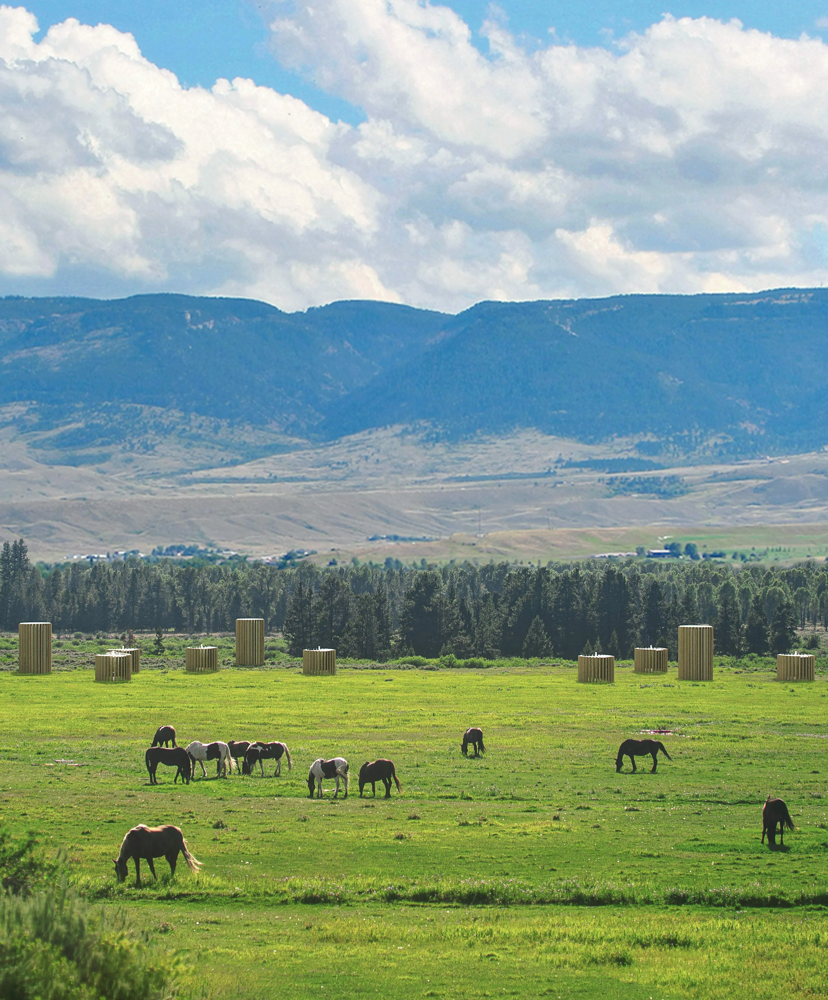
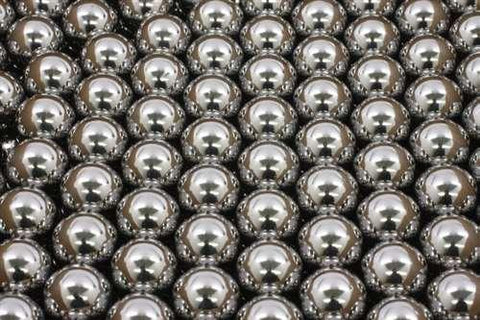
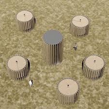
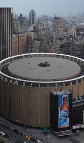

Closing the Carbon
Cycle for a
Sustainable Future
WELCOME TO
DAIR CAPTUREAt Is Dair Capture, our mission is to close the carbon cycle and create a sustainable future for our planet. We believe in the power of innovative solutions to address the urgent challenge of climate change by capturing and utilizing carbon dioxide (CO₂) effectively
Our Approach
CARBON CAPTURE
CARBON UTILIZATION
CARBON STORAGE
RESEARCH AND DEVELOPMENT
CARBON CAPTURE
CARBON UTILIZATION
CARBON STORAGE
RESEARCH AND DEVELOPMENT
CARBON CAPTURE
Implementing advanced systems to capture CO₂ emissions from industrial processes, energy production, and other sources
CARBON UTILIZATION
Converting captured CO₂ into useful products such as fuels, chemicals, and building materials.
CARBON STORAGE
Safely and permanently storing CO₂ in geological formations, preventing it from entering the atmosphere
RESEARCH AND DEVELOPMENT
Continuously innovating and improving our technologies to increase efficiency and effectiveness in carbon capture and utilization
Our Commitment
ENVIRONMENTAL STEWARDSHIP
TECHNOLOGICAL EXCELLENCE
ECONOMIC GROWTH
COMMUNITY ENGAGEMENT
ENVIRONMENTAL STEWARDSHIP
TECHNOLOGICAL EXCELLENCE
ECONOMIC GROWTH
COMMUNITY ENGAGEMENT
ENVIRONMENTAL STEWARDSHIP
At Is Dair Capture, we are dedicated to preserving the natural environment for future generations. Our carbon capture initiatives are designed to minimize ecological impact while maximizing efficiency.
TECHNOLOGICAL EXCELLENCE
We pride ourselves on being at the cutting edge of carbon capture and utilization technology. Our team of experts is continually developing and refining innovative solutions that enhance the capture, conversion, and storage of CO₂.
ECONOMIC GROWTH
We believe that environmental sustainability and economic prosperity can go hand in hand. By transforming captured CO₂ into valuable products, we create new economic opportunities and drive growth in green industries. Our commitment to economic development includes supporting job creation, fostering innovation, and contributing to a resilient, low-carbon economy.
COMMUNITY ENGAGEMENT
Building strong relationships with communities is essential to our mission. We actively engage with local stakeholders, providing education and resources about the benefits of carbon capture and utilization. Our community-focused initiatives aim to inspire collective action against climate change and empower individuals and organizations to participate in creating a sustainable future.
Why use Dair Capture
1. Cutting-Edge Technology:
Dair Capture employs cutting-edge technology, utilizing advanced carbon capture systems to efficiently extract CO2 from the air. Our innovative approach ensures maximum efficiency and reliability in carbon management. By staying at the forefront of technological advancements, we provide effective solutions to tackle climate change and promote sustainability. At Dair Capture, we utilize advanced carbon capture technology to efficiently extract carbon dioxide from the atmosphere. Our state-of-the-art systems are designed for maximum efficiency and reliability, making it easier for businesses and communities to manage their carbon footprint
2. Environmental Responsibility:
Environmental responsibility is at the core of Dair Capture's mission. By reducing atmospheric carbon levels and improving air quality, we actively contribute to global sustainability efforts. Our commitment to preserving the environment extends to minimizing ecological impact and promoting a greener, more sustainable future for generations to come.
3. Cost-Effective Solutions:
Dair Capture understands the importance of economic viability in sustainability initiatives. Our scalable and affordable carbon capture systems ensure that businesses can implement effective carbon management strategies without compromising financial performance. By offering cost-effective solutions, we empower organizations to make meaningful contributions to environmental stewardship while maintaining profitability.
Harnessing Renewables to
Capture and
Transform Co2 Efficiently
Our Best
Technology'sAt Dair-Capture, we are pioneering the use of renewable resources to power our energy-efficient Direct Air Capture systems. Our stable sorbents and well-established eco-system ensure reliable and sustainable carbon capture. Furthermore, by transforming captured CO2 into valuable products, we are closing the carbon cycle and fostering a sustainable future
Renewable
RENEWABLE INTENGRATION
ZERO CARBON FOOTPRINT
RENEWABLE INTENGRATION
ZERO CARBON FOOTPRINT
RENEWABLE INTENGRATION
Implementing advanced systems to capture CO₂ emissions from industrial processes, energy production, and other sources
ZERO CARBON FOOTPRINT
Converting captured CO₂ into useful products such as fuels, chemicals, and building materials.
Energy-Efficient
Energy-Saving Techniques
Low Energy Requirement
Energy-Saving Techniques
Low Energy Requirement
Energy-Saving Techniques
Our DAC employs a novel and unique regeneration method that significantly reduces energy consumption. This method optimizes the process of releasing captured CO2 from the sorbent, making the system more efficient and cost-effective.
Low Energy Requirement
Compared to conventional carbon capture technologies, our DAC requires less energy for the sorbent regeneration phase, which is a critical step in the overall process
Stable Sorbent
Exceptional Stability
Durable and Reliable
Exceptional Stability
Durable and Reliable
Exceptional Stability
The sorbents used in our DAC technology exhibit extremely high stability, thanks to our innovative regeneration method.
Durable and Reliable
Our sorbents are designed to withstand harsh operational conditions without degrading, providing a durable and reliable solution for long-term carbon capture.
Eco-System
Integrated Solutions
Holistic Approach
Integrated Solutions
Holistic Approach
Integrated Solutions
The eco-system of our DAC technology is well-established, incorporating a seamless integration of various components and processes.
Holistic Approach
Our holistic approach ensures that every aspect of the DAC process, from energy input to CO2 sequestration, is optimized for environmental sustainability.
Transforming CO2
Carbon Utilization
Product Innovation
Sequestration and Beyond
Carbon Utilization
Product Innovation
Sequestration and Beyond
Carbon Utilization
Our DAC technology not only captures and sequesters CO2 but also transforms it into valuable products.
Product Innovation
By transforming captured CO2 into commercially viable products, we create new revenue streams and encourage the development of sustainable industries.
Sequestration and Beyond
In addition to sequestration, our technology enables the practical use of CO2 in various applications, ensuring that captured carbon is not just stored but also utilized in ways that benefit society and the environment.

Spiritus
spiritus stands at the forefront of high quality direct air-capyure(DAC) carbon removal bringing to life a groundbreaking solution that captures and sequesters megaton-scale co2 from the atmosphere.
/001

Our Approach
spiritus stands at the forefront of high quality direct air-capyure(DAC) carbon removal bringing to life a groundbreaking solution that captures and sequesters megaton-scale co2 from the atmosphere.
/002

Energy-Saving
spiritus stands at the forefront of high quality direct air-capyure(DAC) carbon removal bringing to life a groundbreaking solution that captures and sequesters megaton-scale co2 from the atmosphere.
/003

Faster Adsorption
spiritus stands at the forefront of high quality direct air-capyure(DAC) carbon removal bringing to life a groundbreaking solution that captures and sequesters megaton-scale co2 from the atmosphere.
/004
Our Team

Harshul Thakkar(CEO)
Dair Capture is led by founder and CEO Harshul Thakkar, PhD (8+ years of direct air capture experience), 3+ years of entrepreneurship and Los Alamos National Lab experience each. Dr. Thakkar’s publications on CO2 capture from ultra/dilute conditions have garnered more than 1600 citations and 3 patents.
David Urtecho(CMO)
complemented by a founding team, expert partners, and service providers spanning engineering, procurement, and construction, MRV, community engagement, audit, environmental law, corporate law, and project financing.